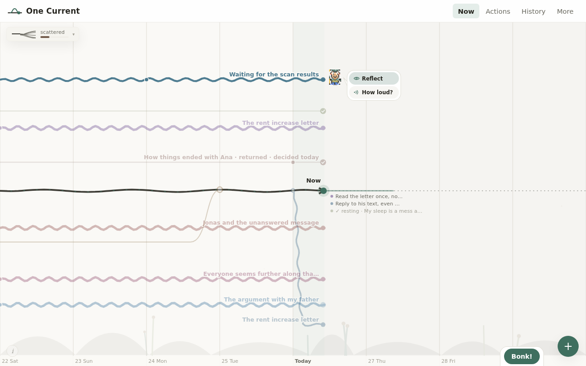
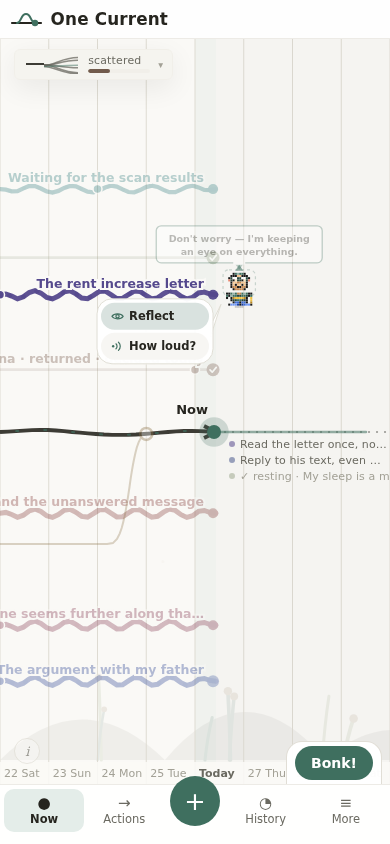
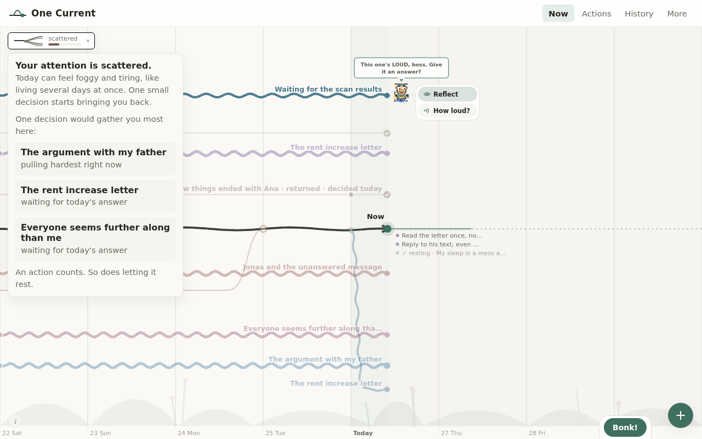
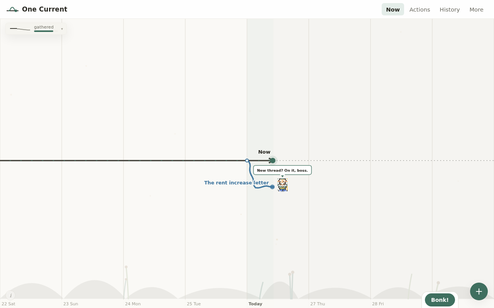

Internal design study · 26 August 2026
This page asks an uncomfortable question about One Current's defining view, follows the published evidence wherever it goes, audits what the app actually draws today, and sets out five alternative representations that keep every metric the timeline carries — including a fair verdict on the open-world idea.
The verdict
Three separate things get conflated in the question "is the timeline confusing?". Taken apart, they get three different answers.
The horizontal time axis and thickness-for-loudness are the best-evidenced parts of the design and should stay. The fork-and-merge topology is a genuine literacy risk with no supporting evidence in its own genre. And in daily use the app does not actually draw that topology at all — which makes the debate partly moot and the fix partly free.
Confidence, honestly stated. High on the axis (direct reaction-time studies, including in Spanish speakers). Moderate-to-high on the topology risk — the evidence is by analogy, from a large literature on how novices misread branching diagrams in biology, plus the striking absence of any comprehension study of this visualization genre after fifteen years. Highest of all on the audit finding below, because that one is not a judgement call: it is verified in the app's own source.
What would change my mind. Six people, ten minutes each, answering three questions in front of the current screen: which of these started longest ago? what does the thickness mean? what happened to this one that curves back? That would settle in an afternoon what this page can only reason about.
Method, and what this is not
This study has three inputs: a review of published work on visualization literacy, timeline comprehension and spatial-temporal mapping; a survey of how comparable apps and games represent concurrent concerns; and a heuristic audit of One Current itself, using fresh screenshots of the running app and a full inventory of what every pixel currently encodes.
No user testing was performed. Nobody was recruited, nothing was measured on a real person. Where this page says a design is likely to be misread, that is an inference from studies of comparable designs, not an observation of anyone using this one. Claims carry a grade:
Three things I deliberately refuse to cite. The widely-repeated claim that a popular self-care pet app produces "56% higher retention" traces to no identifiable study. The per-chart-type accuracy percentages often attributed to the VLAT literacy test appear only in secondary sources reusing it as a benchmark, not in the original paper. And a museum study's network-versus-chart contrast could not be verified past its abstract. Where a number could not be checked, it is not used.
The audit
Before any theory: here is the current view with ten realistic threads loaded, at desktop width. Look for the forks.

This is the most important finding on the page, and it is not a matter of opinion — it is in the source. The visible time window is fixed at eight days: four behind today and four ahead. The store resets to that window on launch and in nine other places. A wider window function exists and is never called from the interface, and a zoom function exists and is never called at all. There is no zoom control in the app.
A thread only draws its fork if the fork date falls inside that eight-day window; otherwise, in the code's own words, "the branch enters from the left as a parallel line". Meanwhile the app's own creation flow offers "earlier this month", which it stores as fifteen days ago, and "I am not sure", which it stores as ninety days ago. Both are permanently outside the window. Closed threads are stricter still: an integration older than about four days is not drawn at all.
The good news is that this is the cheapest possible fix: the geometry already exists, fully built, and is simply unreachable. A span control — or just choosing the existing wider window when threads are older — restores it without designing anything new.
With seven or eight open threads, every line waves. The main line — the one the whole metaphor rests on — is not visually dominant; several branch lines are thicker and more animated than it. The hierarchy the design intends (one life, several pulls) is not the hierarchy the eye receives (many similar wavy lines, one of which happens to be dark).
Loudness is drawn as line thickness, as wave amplitude, as wave speed, as distance pushed away from the lane centre, and in creature themes as the creature's expression. Redundant encoding is usually good practice — but only when each channel is unambiguous. Amplitude and speed read naturally as volatility or frequency, not volume, and I could find no evidence at all for amplitude-as-intensity being understood by lay viewers. Four channels for one quantity also means four things changing when the user drags the dial, which makes the causal link harder to see, not easier.
Lanes carry no stated meaning: a thread's row is the output of a packing algorithm. But dragging a thread up makes it louder. So the vertical direction is meaningless for reading and meaningful for writing — and the packing alternates threads above and below the main line, which puts half of every user's forks in the orientation that the research below found harder to read.

Thread titles are drawn right-aligned at the line's end, so on a narrow screen a long title extends off-canvas to the left with no truncation. The status suffixes the app appends — "· returned", "· decided today" — make the longest labels longer.
Once a thread has today's answer it stops waving, fades, loses its label, and is replaced by a small dotted entry to the right of Now reading "✓ resting · My sleep is a mess again". Several answered threads therefore render as a short text list beside the main line. The app already falls back to a list when the state is calm — which is a hint about what the primary representation might want to be.

Collapsed, the chip labels the user's day with a single adjective. The panel behind it is genuinely helpful — a percentage, a plain-language forecast, and the three threads most worth answering — but it is one tap away, and the collapsed state spends its space on a glyph rather than on the sentence.

A new user's first screen is mostly empty. Because the window is eight days wide regardless of content, a single fresh thread gets a few dozen pixels of run and the rest of the width is backdrop.
The encoding key — "solid = active · curved back = integrated · thicker = louder · faint ✓ = decided today" — lives behind a small "i" in the corner. Four of the ten tutorial steps exist to name geometry ("This horizontal line is your 'Now'", "These lines are your threads", the loudness drag, the merge). A representation that needs four steps of naming before it can be read is a representation carrying real tuition cost.
The evidence
Graph literacy in the general population is lower than designers assume, measured on nationally representative samples with a validated scale Strong. Eye-tracking shows low-literacy readers don't merely score worse — they fixate on different parts of the image, skimming the salient shapes and missing the parts that carry the answer Lab. For One Current that means the loud, thick, waving lines are the message for a large fraction of users; the topology will not be studied.
Galesic & Garcia-Retamero (2011), Medical Decision Making — Germany n=495, US n=492 (doi) · Okan et al. (2016), J. Behavioral Decision Making (doi) · Mini-VLAT: Pandey & Ottley (2023) — literacy predicts aptitude for learning an unfamiliar visualization (doi).
Western readers map time left-to-right automatically, and the effect was demonstrated in Spanish speakers, which settles the question for this app's second and third languages Strong. The mapping is driven by reading direction: Hebrew readers lay sequences out right-to-left, and a few minutes of mirror-reversed text can flip a person's mental timeline Strong. Practical consequence: keep the axis, and make its direction a locale token before any right-to-left language ships, because getting it wrong produces measurable interference rather than mere awkwardness.
Santiago et al. (2007), Psychonomic Bulletin & Review — Spanish speakers (doi) · Fuhrman & Boroditsky (2010), Cognitive Science (doi) · Casasanto & Bottini (2014), JEP: General (pdf). Mandarin's additional vertical mapping is contested, with failed replications.
Horizontal per-entity lifelines, with colour and thickness encoding significance, were introduced and evaluated thirty years ago and have been in clinical and records interfaces ever since Lab (the empirical study was small, n=36). This is the part of One Current with the longest pedigree.
Plaisant et al. (1996), CHI '96, LifeLines (doi); Plaisant et al. (1998), AMIA.
The closest large literature to One Current's fork geometry is not visualization research; it is biology education, where students read evolutionary trees. The findings are consistent and unflattering: novices read along the tips and infer relatedness from adjacency rather than from branching structure, and diagram orientation measurably changes accuracy — a backbone slanting down-to-the-right was read more accurately than up-to-the-right Lab. These were motivated, instructed undergraduates: an easier audience than a person opening a self-care app at eleven at night.
Translated: expect users to read "which line is nearest the main line" as meaningful, and to ignore where a line forked. In One Current, lane proximity is an artefact of a packing algorithm — so that is an active misreading, not a harmless one.
Dees et al. (2014), CBE—Life Sciences Education (doi) · Novick, Stull & Catley (2012), BioScience (doi).
A useful reframe on the "does it look like git?" worry: most non-developers have never seen a commit graph, so there is no false familiarity to fight. The problem is the opposite — they have no schema for fork-and-merge lines. That is worse in principle but more tractable in practice, because it is a teaching problem rather than an unlearning one. Worth noting that even expert tooling finds these graphs hard enough to require topology simplification Design.
Githru (2021), IEEE TVCG — commit-graph complexity and simplification (arXiv) · "Challenges and Confusions in Learning Version Control with Git" (pdf).
One Current is, formally, a storyline visualization with a single protagonist — the family descended from xkcd's movie narrative charts. Fifteen years of that literature is layout algorithms: how to route the ribbons with fewer crossings. I could find no controlled study of whether lay viewers read them correctly. An absence of evidence is not evidence of a problem, but it does mean the design cannot claim support Sentiment — and the adjacent family that has been tested, node-link diagrams, only outperforms alternatives at very small sizes Lab.
Ghoniem, Fekete & Castagliola (2005), Information Visualization — node-link favoured only below roughly twenty nodes (pdf) · Brehmer et al. (2017), Timelines Revisited, IEEE TVCG — a design space of 263 real timelines, including the faceted and relative-scale options used later on this page (site).
Median fifteen-day retention for non-FDA-cleared mental-health apps is around 3.9%, and app-based depression trials show pooled dropout of 26% rising to nearly 48% once publication bias is accounted for Review. Any encoding that needs a second session to click will not get one. Relatedly, onboarding help has been shown to pay off only for unfamiliar visualizations — and in-situ teaching beat a tutorial page Lab (n=596). Teach the fork the first time a fork appears, not in a carousel before the app.
Nwosu et al. (2022), Frontiers in Psychiatry (doi) · Stoiber et al. (2022), Visual Informatics (arXiv).
A common assumption — simpler means clearer but duller — is only half true. Adding pictographs and illustration costs little or nothing in accuracy and improves engagement and preference Lab; embellished charts were remembered better weeks later, though that finding is methodologically contested Lab. What is not free is a novel encoding. One Current currently spends its novelty budget on structure rather than on surface, which is the wrong way round: it could keep every ounce of its warmth, creatures and weather while making the semantics conventional.
Haroz, Kosara & Franconeri (2015), CHI — ISOTYPE pictographs (doi) · Bateman et al. (2010), CHI — "Useful Junk?" (pdf), challenged by Li & Moacdieh (2014).
In a set of experiments on treating thoughts as physical objects, the third one was digital: participants typed an unwanted thought and either dragged the file to the recycle bin or saved it. Dragging it to the bin reduced the thought's influence; merely imagining doing so did nothing Strong (n=78 in that experiment). A VR study converges from the other side: ten enacted physical verbs on individual thoughts — bursting, watering, wiping, sorting — reduced negative affect with no diagram literacy required Lab (n=30).
Briñol, Gascó, Petty & Horcajo (2013), Psychological Science (doi) · Mind Mansion, DIS '24 (doi).
Interview work with non-expert self-trackers found they want immediacy — an impressionistic whole they can recognise themselves in — and with mood-tracking specifically, the named gap was help interpreting their own data, with calendar and figure forms preferred Lab (qualitative). One plain sentence — "work has been loud for twelve days and hasn't quieted" — probably does more than any amount of diagram refinement.
Rapp & Cena (2016), IJHCS (doi) · Schueller et al. (2021), JMIR Mental Health (link).
Gamification. A meta-analysis of gamified mental-health apps found the number of game elements did not predict effectiveness, and no effect of gamification on adherence; one proposed mechanism is blunted reward sensitivity in depression Review. That is a direct challenge to the tokens and super-bonk layer as a retention argument. It does not make them harmful — a soothing companion is defensible on other grounds — but they should not be counted on to bring people back.
Intensity that rises on its own. One Current's loudness drifts upward for every day a thread goes unanswered. That is structurally the same as a needs meter that decays, which is the documented failure mode of pet and simulation design: the widely-shared complaint about The Sims' needs is that tending them becomes "a chore", and analysis of companion design warns specifically against mechanics that manufacture guilt Sentiment. The mitigation that shipped in a comparable wellbeing product is blunt: the plants never die. Worth asking whether drift should be capped sooner, softened, or made opt-in — for an anxious user, an app that gets visibly angrier while they cope is a real risk.
Six et al. (2021), JMIR Mental Health (link) · Brown et al. (2016), JMIR Mental Health (link) · pet-companion design critique (link).
The one study that supports open worlds for wellbeing finds the benefit runs through cognitive escapism and relaxation — getting away from your problems Lab (n=609, cross-sectional, self-report). The open-world idea here is the opposite mechanism: a world where you go to your anxieties and handle them. The study does not license that transfer. Meanwhile the design evidence is consistent about what makes small worlds readable: density over size, a fixed camera, few objects, bounded space. Removing those guardrails produces decision paralysis, and the older hypertext literature has a name for the failure — getting lost in the space Design. Sims-as-therapy, meanwhile, is press coverage, not research.
Wang et al. (2024), JMIR (link) · environment-art writing on Alba (link) · "lost in hyperspace" (overview).
The constraint
Any alternative is only serious if it still expresses all of this. The timeline's hardest-to-replace contributions are the ones that depend on a position in time.
Two assets make several alternatives cheaper than they look. The app already records every loudness change in a log that is displayed nowhere — free history for any sparkline or grid. And it already contains a 56-pixel schematic of a thread (fork, run, merge) drawn with no date axis at all, used as a context strip while reading one thread. The geometry survives being shrunk to a card.
Five alternatives
Each is mocked up below, scored honestly, and judged on whether it can carry the list above. None of them is free; two of them are close to free.
The case for. Lists and fill bars are the two most reliably understood patterns found anywhere in this study; no app in the survey has published complaints about list comprehension. It answers the interpretation gap directly, because each card can carry a sentence. It reuses the existing thread panels untouched, and it is the cheapest of the five to build — the app already ships two half-versions of it.
The case against. It loses the split. There is no visible gap between the life you intend and the pull away from it, which is precisely the mechanism the published research page argues for. It is also, frankly, ordinary: it would make One Current look like every other tracker, and the charm would have to be reintroduced deliberately.
The case for. This is the dark horse. It is a faceted timeline — a named, catalogued representation in the timeline design-space survey — and it is shaped exactly like a DBT diary card, a multi-item intensity grid with real clinical usage and systematic-review support. Day-grids are also culturally pretrained by contribution graphs and mood mosaics. It keeps the time axis, kills fork topology entirely, shows drift as an unmistakable darkening streak, and makes progress visible in a way the current view cannot: a row that lightens is a worry getting quieter. It needs no new data.
The case against. It is a grid, so it is a little clinical — the opposite of cosy — and it has no natural place for Pip to walk. Fork dates survive only as "the row starts here", and the split disappears as thoroughly as in the Ledger. Fine detail (moments, conflicts) has to move into the row's detail view.
The case for. Every metric survives unchanged, because nothing about the model changes; only the drawing does. Water solves several legibility problems for free: it has an obvious direction, tributaries obviously join rather than merely touch, width obviously means volume, and one landmark downstream gives the eye a goal — the trick a wordless game used to orient players with no interface at all. It keeps the app's identity and the published psychological claims intact, and Pip still has a bank to walk along.
The case against. It is a re-skin, not a rethink: if the fork topology genuinely defeats people, prettier water will not fix it. It fights precision (a river's edge is a poor scale), it risks looking busy with eight tributaries, and it is a substantial rendering job — the current squiggle and calm-wave systems would need rewriting around variable-width strokes.
The case for. This is where the strongest single finding in the study cashes out: enacted gestures on individual thoughts have direct causal support, and a scene of discrete objects invites them — pick it up, carry it, set it down, walk it to the door. It needs no diagram literacy whatsoever, it gives Pip a real job, and closure becomes a ritual rather than a curve. Bounded, fixed-camera, low-density scenes are exactly what the game-design evidence says stays readable.
The case against. Time is its weak axis. "This started three weeks ago" has no natural carrier in a clearing — you would need an explicit marker (dust, position, a label), which is admitting the metaphor cannot express it. It also caps out: a handful of objects is legible, twelve is a junk drawer, and the free plan already allows ten open threads. And it is the second most expensive option here.
Nicky's instinct that this is "too Sims-like and more complex" is right, and the evidence says so for reasons worth stating precisely. The failure is not legibility — needs meters are extremely legible — it is that tending decaying meters becomes a chore, and a chore is the last thing to hand an anxious person. Add the disorientation literature, the decision paralysis that appears when a world loses its guardrails, and the fact that the one supportive wellbeing study works through escaping your problems rather than facing them, and the case collapses. It also has the weakest carriers for dates and durations and the highest build cost of anything here. Recommendation: don't. Take option D instead, which keeps what is appealing about the idea.
Side by side
| Today's timeline | A · Ledger | B · Board | C · Current | D · Scene | E · Open world | |
|---|---|---|---|---|---|---|
| When it started | in theory — invisible in practice | as words | row start | position | needs a marker | weak |
| How long it has pulled | length, if in window | "open 12 days" | row length | length | implied | weak |
| Loudness | four channels | bar + sparkline | cell shade | width | size | size |
| Upward drift visible | gradual, unlabelled | sparkline | darkening streak | widening | growing | growing |
| Integration / burn / hand-off | distinct geometry | chips + glyph | cell marks | confluence | door rituals | rituals |
| The split made visible | its whole point | lost | lost | kept | objects vs you | objects vs you |
| Comprehension load | highest | lowest | low | medium | low | high |
| Enacted interaction | dial, bonk, burn | buttons | tap a cell | dial, bonk | strongest | strong |
| Room for Pip | native | awkward | awkward | native | native | native |
| Build cost | already built | smallest | small | large | large | largest |
| Narrow screens & long Spanish | labels clip today | reflows | needs scroll | same risk | crowds | worst |
Scores are my judgement against the evidence and the code, not measurements. The column that would move most under real user testing is "comprehension load" — which is exactly the column the whole argument turns on.
Recommendation
Do not replace the timeline. Do three cheaper things instead, in this order: make the split actually visible, stop requiring anyone to read it, and move the next chunk of effort from drawing to doing.
1 · Fix the window (days of work, not weeks). The most damaging finding in this study is also the cheapest to fix, and it needs no new design: give the view a span the content deserves — the wider window function already exists and is never called — or add the zoom that was written and never wired up. Until then the app is spending an enormous amount of rendering craft on geometry its users almost never see.
2 · Add the Ledger as the first surface, and let the map be the reward. With one session's grace before most people leave, the opening screen should be readable with zero tuition: cards, a loudness bar, a duration, a sentence. The timeline becomes the view you graduate to — the picture that explains what the cards mean, taught in place the first time a fork appears rather than in a tour before the app. This is the layered answer the literacy and attrition evidence both point to, and the app is already most of the way there: two stripped-down list views ship today.
3 · Spend the next big effort on enacted gestures, not on a new picture. The single strongest causal result in this review is that dragging a written thought to a bin changed how much it mattered, while imagining the same thing did not. That is an argument for more verbs — carry, set down, put away, hand over, close the door — attached to individual threads. If a second representation is ever built, the Bounded Scene is the one to build, because it is where those verbs live naturally. Not the open world.
The counter-case, stated fairly. If the goal is the largest number of people understanding One Current on first contact, the honest answer is that the Board should be the default and the timeline should be optional. It carries more of the metric set than the Ledger, keeps a real time axis, shows progress better than anything else here, and asks almost nothing of the reader. The reason I do not lead with it is not evidence — it is identity: the split timeline is the argument this app is making about how a life feels, and the published research page stakes real claims on it. That is a product decision, not a research one, and it is Nicky's to make.
Worth doing either way